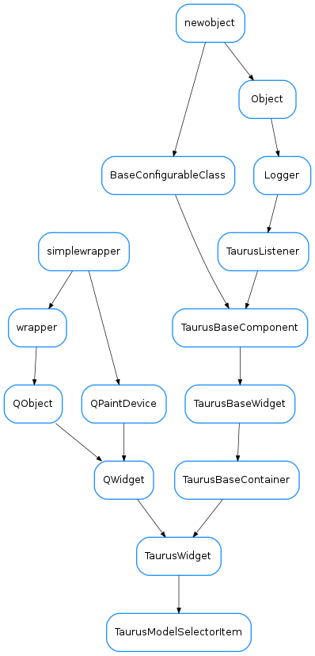

TaurusModelSelectorItem¶

-
class
TaurusModelSelectorItem(parent=None, **kwargs)[source]¶ Bases:
taurus.qt.qtgui.container.tauruswidget.TaurusWidgetBase class for ModelSelectorItem. It defines the minimal API to be defined in the specialization
-
default_model¶ Reimplement to return a default model to initialize the widget
-
modelsAdded¶
-